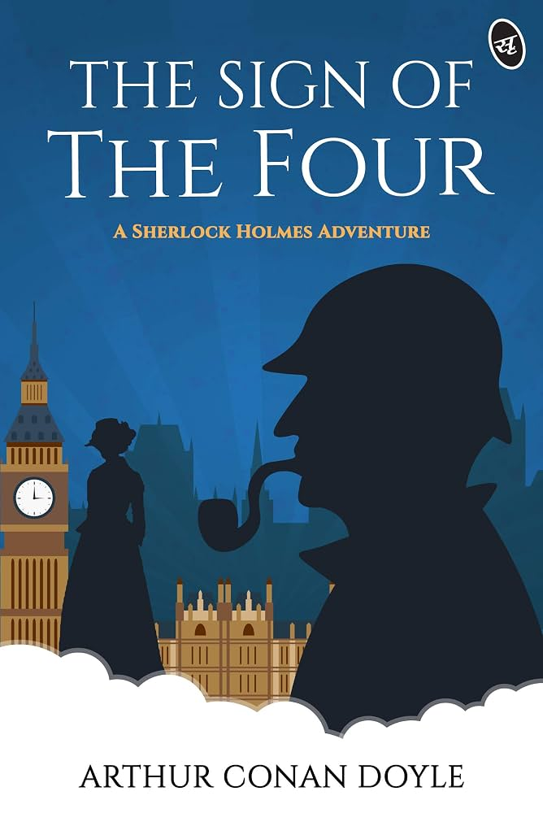

The book review
The Sign of the Four
A secret pact, a missing treasure, and a puzzling murder take Holmes and Watson on a case across London.
Overall review
A lively adventure that brings together a puzzling case, an elusive treasure, and the unmistakable partnership of Holmes and Watson. It balances detective work with a brisk, eventful plot.
Review in detail
The mystery unfolds through shifting clues and a memorable chase, giving Holmes plenty of opportunity to demonstrate his methods. Watson's growing affection for Mary Morstan adds a personal thread, while the final account gives the treasure its complicated history.
Who should read it
This is a good choice for readers who enjoy Victorian adventure, classic detective puzzles, and stories where the investigation leads somewhere unexpected.